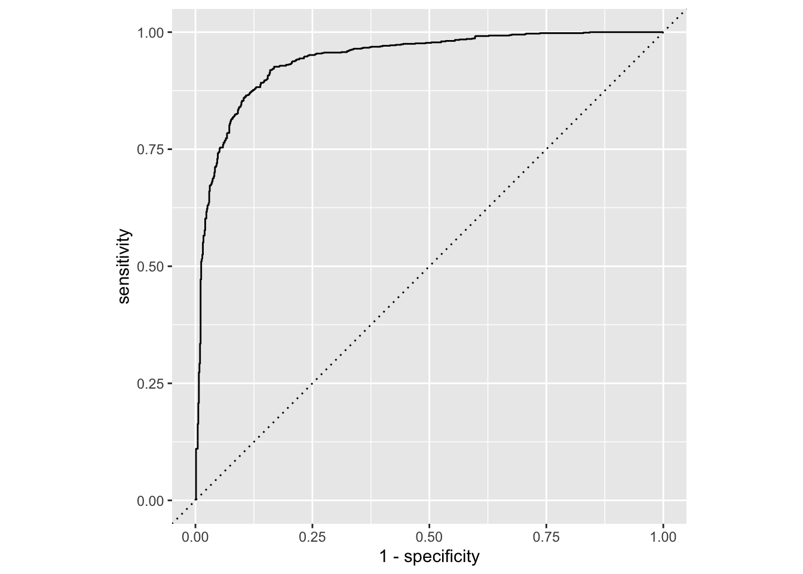
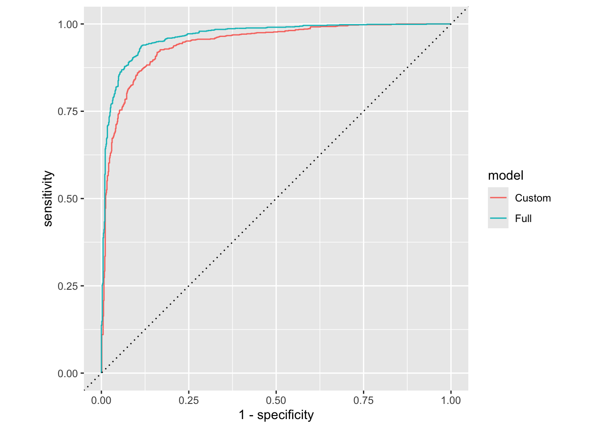

AE 17: Forest classification
Suggested answers
These are suggested answers. This document should be used as reference only, it’s not designed to be an exhaustive key.
In this application exercise, we will
- Split our data into testing and training
- Fit logistic regression regression models to testing data to classify outcomes
- Evaluate performance of models on testing data
We will use tidyverse and tidymodels for data exploration and modeling, respectively, and the forested package for the data.
Remember from the lecture that the forested dataset contains information on whether a plot is forested (Yes) or not (No) as well as numerical and categorical features of that plot.
glimpse(forested)Rows: 7,107
Columns: 19
$ forested <fct> Yes, Yes, No, Yes, Yes, Yes, Yes, Yes, Yes, Yes, Yes,…
$ year <dbl> 2005, 2005, 2005, 2005, 2005, 2005, 2005, 2005, 2005,…
$ elevation <dbl> 881, 113, 164, 299, 806, 736, 636, 224, 52, 2240, 104…
$ eastness <dbl> 90, -25, -84, 93, 47, -27, -48, -65, -62, -67, 96, -4…
$ northness <dbl> 43, 96, 53, 34, -88, -96, 87, -75, 78, -74, -26, 86, …
$ roughness <dbl> 63, 30, 13, 6, 35, 53, 3, 9, 42, 99, 51, 190, 95, 212…
$ tree_no_tree <fct> Tree, Tree, Tree, No tree, Tree, Tree, No tree, Tree,…
$ dew_temp <dbl> 0.04, 6.40, 6.06, 4.43, 1.06, 1.35, 1.42, 6.39, 6.50,…
$ precip_annual <dbl> 466, 1710, 1297, 2545, 609, 539, 702, 1195, 1312, 103…
$ temp_annual_mean <dbl> 6.42, 10.64, 10.07, 9.86, 7.72, 7.89, 7.61, 10.45, 10…
$ temp_annual_min <dbl> -8.32, 1.40, 0.19, -1.20, -5.98, -6.00, -5.76, 1.11, …
$ temp_annual_max <dbl> 12.91, 15.84, 14.42, 15.78, 13.84, 14.66, 14.23, 15.3…
$ temp_january_min <dbl> -0.08, 5.44, 5.72, 3.95, 1.60, 1.12, 0.99, 5.54, 6.20…
$ vapor_min <dbl> 78, 34, 49, 67, 114, 67, 67, 31, 60, 79, 172, 162, 70…
$ vapor_max <dbl> 1194, 938, 754, 1164, 1254, 1331, 1275, 944, 892, 549…
$ canopy_cover <dbl> 50, 79, 47, 42, 59, 36, 14, 27, 82, 12, 74, 66, 83, 6…
$ lon <dbl> -118.6865, -123.0825, -122.3468, -121.9144, -117.8841…
$ lat <dbl> 48.69537, 47.07991, 48.77132, 45.80776, 48.07396, 48.…
$ land_type <fct> Tree, Tree, Tree, Tree, Tree, Tree, Non-tree vegetati…Spending your data
Split your data into testing and training in a reproducible manner and display the split object.
set.seed(1234)
forested_split <- initial_split(forested)
forested_split<Training/Testing/Total>
<5330/1777/7107>What percent of the original forested data is allocated to training and what percent to testing? Compare your response to your neighbor’s. Are the percentages roughly consistent? What determines this in the initial_split()? How would the code need to be updated to allocate 80% of the data to training and the remaining 20% to testing?
# training percentage
5330 / 7107[1] 0.7499648# testing percentage
1770 / 7107[1] 0.2490502Roughly 75% of the data is allocated to training and the remaining 25% to testing. This is because the prop argument in initial_split() is 3/4 by default. The code would need to be updated as follows for a 80%/20% split:
# split 80-20
set.seed(1234)
initial_split(forested, prop = 0.8)<Training/Testing/Total>
<5685/1422/7107># training percentage
5685 / 7107[1] 0.7999156# testing percentage
1422 / 7107[1] 0.2000844Let’s stick with the default split and save our testing and training data.
forested_train <- training(forested_split)
forested_test <- testing(forested_split)Exploratory data analysis
Create a visualization that explores the relationship between the outcome, one numerical predictor, and one categorical predictor. Then, describe, in a few sentences, what the visualization shows about the relationship between these variables.
Note: Pay attention to which dataset you use for your exploration.
ggplot(
forested_train,
aes(x = temp_annual_mean, fill = forested, group = forested)
) +
geom_histogram(position = "identity", alpha = 0.7) +
scale_fill_manual(values = c("Yes" = "forestgreen", "No" = "gold2")) +
facet_wrap(~land_type, ncol = 1) +
theme_minimal()`stat_bin()` using `bins = 30`. Pick better value with `binwidth`.Regardless of land type, typical mean annual temperatures in non-forested areas are higher than typical mean annual temperatures in forested areas. The shape of the distribution of mean annual temperatures does not seem to vary by land type or forestation.
Model 1: Custom choice of predictors
Fit
Fit a model for classifying plots as forested or not based on a subset of predictors of your choice. Name the model forested_custom_fit and display a tidy output of the model.
forested_custom_fit <- logistic_reg() |>
fit(forested ~ elevation + tree_no_tree + lat + lon + temp_annual_mean, data = forested_train)
tidy(forested_custom_fit)# A tibble: 6 × 5
term estimate std.error statistic p.value
<chr> <dbl> <dbl> <dbl> <dbl>
1 (Intercept) 48.2 6.06 7.96 1.71e- 15
2 elevation -0.000311 0.000384 -0.811 4.17e- 1
3 tree_no_treeNo tree 3.35 0.0925 36.3 4.02e-288
4 lat -0.313 0.0642 -4.87 1.09e- 6
5 lon 0.311 0.0288 10.8 3.81e- 27
6 temp_annual_mean 0.270 0.0819 3.30 9.78e- 4Predict
Predict for the testing data using this model.
forested_custom_aug <- augment(forested_custom_fit, new_data = forested_test)
forested_custom_aug# A tibble: 1,777 × 22
.pred_class .pred_Yes .pred_No forested year elevation eastness northness
<fct> <dbl> <dbl> <fct> <dbl> <dbl> <dbl> <dbl>
1 Yes 0.877 0.123 Yes 2005 113 -25 96
2 Yes 0.829 0.171 Yes 2005 736 -27 -96
3 Yes 0.855 0.145 Yes 2005 224 -65 -75
4 Yes 0.957 0.0431 Yes 2003 1031 -49 86
5 Yes 0.728 0.272 No 2005 1713 -66 75
6 Yes 0.982 0.0175 Yes 2014 1612 30 -95
7 No 0.0765 0.924 No 2014 507 44 -89
8 Yes 0.889 0.111 Yes 2014 940 -93 35
9 Yes 0.659 0.341 No 2014 246 22 -97
10 No 0.0877 0.912 No 2014 419 86 -49
# ℹ 1,767 more rows
# ℹ 14 more variables: roughness <dbl>, tree_no_tree <fct>, dew_temp <dbl>,
# precip_annual <dbl>, temp_annual_mean <dbl>, temp_annual_min <dbl>,
# temp_annual_max <dbl>, temp_january_min <dbl>, vapor_min <dbl>,
# vapor_max <dbl>, canopy_cover <dbl>, lon <dbl>, lat <dbl>, land_type <fct>Evaluate
Calculate the false positive and false negative rates for the testing data using this model.
forested_custom_aug |>
count(.pred_class, forested) |>
arrange(forested) |>
group_by(forested) |>
mutate(
p = round(n / sum(n), 2),
decision = case_when(
.pred_class == "Yes" & forested == "Yes" ~ "True positive",
.pred_class == "Yes" & forested == "No" ~ "False positive",
.pred_class == "No" & forested == "Yes" ~ "False negative",
.pred_class == "No" & forested == "No" ~ "True negative"
)
)# A tibble: 4 × 5
# Groups: forested [2]
.pred_class forested n p decision
<fct> <fct> <int> <dbl> <chr>
1 Yes Yes 864 0.9 True positive
2 No Yes 98 0.1 False negative
3 Yes No 124 0.15 False positive
4 No No 691 0.85 True negative Another commonly used display of this information is a confusion matrix. Create this using the conf_mat() function. You will need to review the documentation for the function to determine how to use it.
conf_mat(
forested_custom_aug,
truth = forested,
estimate = .pred_class
) Truth
Prediction Yes No
Yes 864 124
No 98 691Sensitivity, specificity, ROC curve
Calculate sensitivity and specificity and draw the ROC curve.
forested_custom_roc <- roc_curve(forested_custom_aug, truth = forested, .pred_Yes)
forested_custom_roc# A tibble: 1,779 × 3
.threshold specificity sensitivity
<dbl> <dbl> <dbl>
1 -Inf 0 1
2 0.0186 0 1
3 0.0202 0.00123 1
4 0.0204 0.00245 1
5 0.0207 0.00368 1
6 0.0227 0.00491 1
7 0.0286 0.00613 1
8 0.0298 0.00736 1
9 0.0299 0.00859 1
10 0.0300 0.00982 1
# ℹ 1,769 more rowsggplot(forested_custom_roc, aes(x = 1 - specificity, y = sensitivity)) +
geom_path() +
geom_abline(lty = 3) +
coord_equal()
Model 2: All predictors
Fit
Fit a model for classifying plots as forested or not based on all predictors available. Name the model forested_full_fit and display a tidy output of the model.
forested_full_fit <- logistic_reg() |>
fit(forested ~ ., data = forested_train)
tidy(forested_full_fit)# A tibble: 20 × 5
term estimate std.error statistic p.value
<chr> <dbl> <dbl> <dbl> <dbl>
1 (Intercept) -12.1 32.6 -0.371 7.11e- 1
2 year 0.00456 0.0152 0.299 7.65e- 1
3 elevation -0.00277 0.000639 -4.33 1.47e- 5
4 eastness -0.000910 0.000734 -1.24 2.15e- 1
5 northness 0.00208 0.000745 2.79 5.26e- 3
6 roughness -0.00399 0.00146 -2.73 6.29e- 3
7 tree_no_treeNo tree 1.25 0.136 9.23 2.61e-20
8 dew_temp -0.125 0.176 -0.712 4.76e- 1
9 precip_annual -0.0000895 0.000100 -0.895 3.71e- 1
10 temp_annual_mean -7.30 12.4 -0.587 5.57e- 1
11 temp_annual_min 0.819 0.103 7.93 2.20e-15
12 temp_annual_max 2.59 6.22 0.417 6.77e- 1
13 temp_january_min 3.34 6.21 0.538 5.91e- 1
14 vapor_min 0.00000990 0.00353 0.00280 9.98e- 1
15 vapor_max 0.00925 0.00132 7.00 2.62e-12
16 canopy_cover -0.0446 0.00366 -12.2 4.18e-34
17 lon -0.0953 0.0559 -1.71 8.80e- 2
18 lat 0.0748 0.109 0.683 4.94e- 1
19 land_typeNon-tree vegetation -0.735 0.282 -2.61 9.05e- 3
20 land_typeTree -1.58 0.297 -5.33 9.93e- 8Predict
Predict for the testing data using this model.
forested_full_aug <- augment(forested_full_fit, new_data = forested_test)
forested_full_aug# A tibble: 1,777 × 22
.pred_class .pred_Yes .pred_No forested year elevation eastness northness
<fct> <dbl> <dbl> <fct> <dbl> <dbl> <dbl> <dbl>
1 Yes 0.930 0.0700 Yes 2005 113 -25 96
2 Yes 0.918 0.0822 Yes 2005 736 -27 -96
3 No 0.428 0.572 Yes 2005 224 -65 -75
4 Yes 0.972 0.0280 Yes 2003 1031 -49 86
5 Yes 0.633 0.367 No 2005 1713 -66 75
6 Yes 0.980 0.0201 Yes 2014 1612 30 -95
7 No 0.0436 0.956 No 2014 507 44 -89
8 Yes 0.845 0.155 Yes 2014 940 -93 35
9 No 0.0141 0.986 No 2014 246 22 -97
10 No 0.0386 0.961 No 2014 419 86 -49
# ℹ 1,767 more rows
# ℹ 14 more variables: roughness <dbl>, tree_no_tree <fct>, dew_temp <dbl>,
# precip_annual <dbl>, temp_annual_mean <dbl>, temp_annual_min <dbl>,
# temp_annual_max <dbl>, temp_january_min <dbl>, vapor_min <dbl>,
# vapor_max <dbl>, canopy_cover <dbl>, lon <dbl>, lat <dbl>, land_type <fct>Evaluate
Calculate the false positive and false negative rates for the testing data using this model.
forested_full_aug |>
count(.pred_class, forested) |>
arrange(forested) |>
group_by(forested) |>
mutate(
p = round(n / sum(n), 2),
decision = case_when(
.pred_class == "Yes" & forested == "Yes" ~ "True positive",
.pred_class == "Yes" & forested == "No" ~ "False positive",
.pred_class == "No" & forested == "Yes" ~ "False negative",
.pred_class == "No" & forested == "No" ~ "True negative"
)
)# A tibble: 4 × 5
# Groups: forested [2]
.pred_class forested n p decision
<fct> <fct> <int> <dbl> <chr>
1 Yes Yes 876 0.91 True positive
2 No Yes 86 0.09 False negative
3 Yes No 85 0.1 False positive
4 No No 730 0.9 True negative Sensitivity, specificity, ROC curve
Calculate sensitivity and specificity and draw the ROC curve.
forested_full_roc <- roc_curve(forested_full_aug, truth = forested, .pred_Yes)
forested_full_roc# A tibble: 1,779 × 3
.threshold specificity sensitivity
<dbl> <dbl> <dbl>
1 -Inf 0 1
2 0.00106 0 1
3 0.00107 0.00123 1
4 0.00217 0.00245 1
5 0.00287 0.00368 1
6 0.00290 0.00491 1
7 0.00290 0.00613 1
8 0.00309 0.00736 1
9 0.00321 0.00859 1
10 0.00323 0.00982 1
# ℹ 1,769 more rowsggplot(forested_full_roc, aes(x = 1 - specificity, y = sensitivity)) +
geom_path() +
geom_abline(lty = 3) +
coord_equal()
Model 1 vs. Model 2
Plot both ROC curves and articulate how you would use them to compare these models.
forested_custom_roc <- forested_custom_roc |>
mutate(model = "Custom")
forested_full_roc <- forested_full_roc |>
mutate(model = "Full")
bind_rows(
forested_custom_roc,
forested_full_roc
) |>
ggplot(aes(x = 1 - specificity, y = sensitivity, color = model)) +
geom_path() +
geom_abline(lty = 3) +
coord_equal()